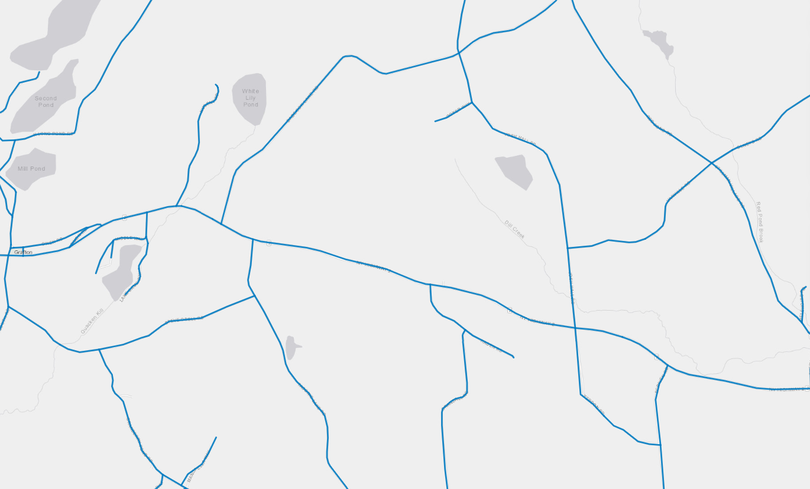
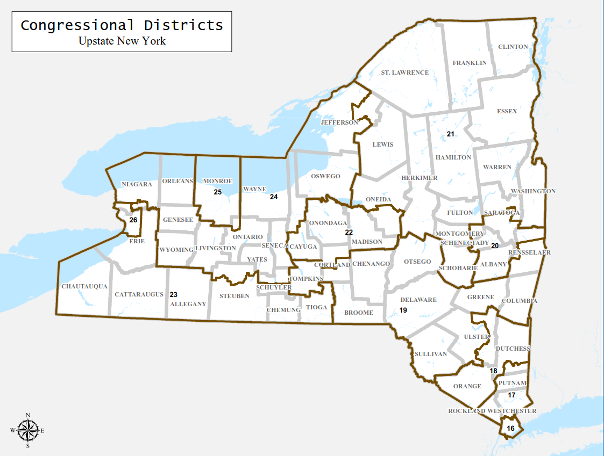
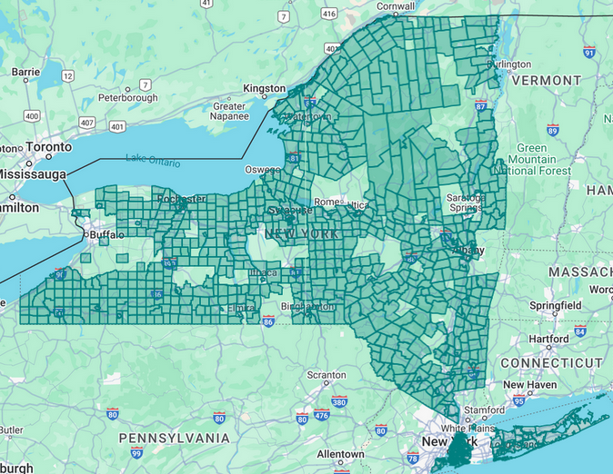
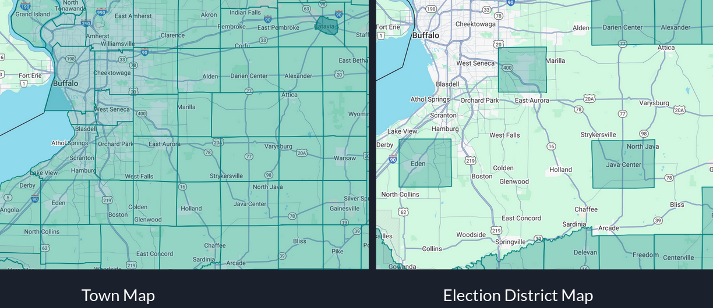
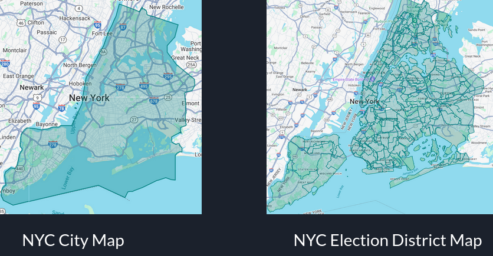

District Shape Creation
Author: Jacob Keegan
Final Presentation
Project summary
There are many district types in the state of New York, such as Town/City, County, Congressional, Senate, Assembly, and Election districts (EDs).
Election districts are the units that these other districts are made up of.
In other words, an Election district cannot cross any borders of these other districts.
In brief, everyone within an election district has the same polling place.
The goal of this project is to create geometry data for Election districts.
Data Sources
Voterfile
- The voterfile contains information for every registered voter in New York state
- Most importantly here, it has addresses, and the districts those addresses are assigned to
- We will use this as base election district data, and to narrow our search for overlaps
- The NYS GIS Clearinghouse publishes geospatial data covering all streets in the state
- Each street is split into segments, including wherever it intersects with another street
- Each segment comes with lots of information, such as the town/city the segment starts and ends in
A sample screenshot of GIS data:

- By law, Congressional, state Senate, and Assembly geospatial data is published online by LATFOR
- GIS also has data for towns and cities (every place in New York is within a town or city)
An example screenshot of upstate Congressional LATFOR maps:

Requirements
Our starting point is having no election districts at all, so anything is an improvement.
The results certainly won't be perfect: for one thing, we don't have geospatial data for Wards (subdivisions of Towns).
Election districts must lie entirely within a single Ward, in addition to the other district types.
Preparation
First, some cleaning of the Streets data. I removed most of the columns, since their data is not relevant to this application.
I also remove all irrelevant segments: cul-de-sacs, hiking trails, and offshoots from other roads that cannot form a boundary.
Next, I collected all possible mappings of people's districts in the voterfile.
This will greatly reduce our work overlapping districts later:
we only need to create geometry for overlapping districts if someone actually lives in a place they overlap.
Using SAGE, I also turned these addresses into coordinates for later use.
Geometric Operations
Now, we're ready to loop over every town/city. For each, we'll first get all the Street segments within it.
Using PostGIS (a PostgreSQL extension for manipulating geospatial data) and with some pre-processing, we'll turn the line data into polygons.
Next, we'll use our data from the voterfile to see which other districts intersect the current town/city.
Using PostGIS, we'll create overlaps: the intersections of Congressional, state Senate, County, and Assembly maps within a town/city.
We'll intersect this with the earlier polygonized Streets data to create new polygons.
Note that all of this has to be done first: in the voterfile, ED numbers are only unique within their overlap.
Now, we'll plot all the earlier points. This gives us good coverage: Almost all of the millions of addresses from the voterfile have an ED.
Lastly, some simplification. There may still be some polygons without any addresses in them. These can often be combined by looking at surrounding polygons.
Runtime Analysis
Functionally, the runtime is actually dominated by geocoding of addresses (that is, mapping them to points).
This requires making API requests over the internet, making it significantly slower than other work, when replicated over millions of addresses.
Results
Unfortunately, these results are generated and displayed in SAGE,
which only runs on the Senate's servers with a paid key from Google to display the maps.
So, here I will share a small selection of results.
Below is the full map for EDs created across New York state.

Overall, we got decent coverage. However, there are some clear gaps in several areas.
I believe these gaps are because of missing towns/cities from the voterfile.
The database I am using only associated towns/cities with ~75% of addresses in the voterfile.
This is compared to over 99% for Congressional, state Senate, Assembly, and Election districts.
It may be that such information is simply missing from many entries in the original voterfile,
or the parser I wrote at work doesn't correctly match some of them.
To support this claim, see below. Note the similarities between the town/city map on the left,
and the missing election districts on the right.

But the coverage of some areas is extensive. For example, look at the city map of NYC on the left,
vs. the ED map on the right.
